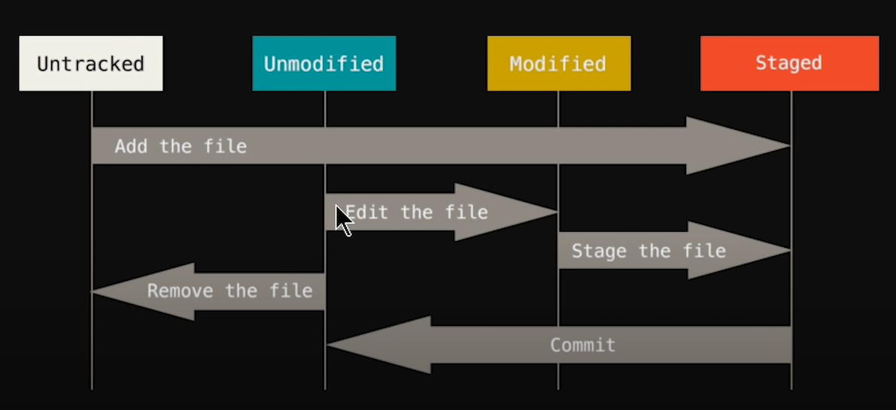

Git for beginners!
0. Add Name and Email
Whenever we commit some code, so we saw our name and email for identifing that which commit is done by which person. It's usually vital if one is working with Tech gaints like Facebook.
Set your email and name for the first time using Git:
-
${ git config --global user.name Ahsan\ Azeemi }: This command will set the username to Ahsan Azeemi, and whenever this user commit something, this name will append to the output.
-
${ git config --global user.email ahsanazeemiofficial@gmail.com }: This command will set the useremail to ahsanazeemiofficial@gmail.com, and whenever this user commit something, this email will also append to the output.
1. git init
For the first time for creating a git directory, it must be called. It is used to initilazie Git in current directory.
For example: git init
2. git status
It is used to see what is the status of current git direcoty.
For example: git status
- ${ git status }: This command shows decriptive format of current files status in Git repository.
For example: git status
- ${ git status -s }: This command breifly shows current files status in Git repository.
For example: git status -s
There are 4 types of git status:
- Untracked: there is a new file for git which git never initilazied in past.
- Unmodified: All files are commited and ready for edit.
- Modified: Someone has modified the given file which was not commited.
- Stagged: Git has added files to stage where they will get commit.
For more info, seek through the following image:

Important!
If you add files to Stagged Area, and then edit again without commiting. So it will show you the previous version of your file which is in Stagged Area. Just run git add -A to add all of files to Stagged Area (Tracked and Untracked) both.
3. git add
It is used to add files to Stagged Area at "that instant" only.
- ${ git add }: Add the mentioned file to Stagged Area.
For example: git add index.html
- ${ git add -A}: Add all files to Stagged Area in the given directory.
4. git commit
It is used to save an snapeshot of directory at that instant.
- ${ git commit }: Open Vim editor for writing change log, and then you can write by pressing i and then exit by pressing ESC then typing :wq.
- ${ git commit -m}: Instead of opening Vim, this will commit the files with the log which you wrote after -m in double quotes.
For example: git commit -m "Initial Commit"
- ${ git commit -am}: Instead of adding all files to Stagged Area, then comitting them, you can just do it directly by this command.
For example: git commit -am "Update index.html"
5. git checkout
It is used to update fies as according to last commit. Moreever, it does get you back deleted files. If one changes the code and make it worse, then this command can be used to revert changes to what was commited at the last time.
- ${ git checkout }: Revert the changes of mentioned file to the last commit as what git checkout command does. It can also get your deleted files back.
For example: git checkout app.js
- ${ git checkout -f}: Instead of checking out files one by one. The best way to is to use this commands. This will revert changes for all files in current working direcoty.
For example: git commit -f
6. git log
It is used to check change log of current git repository. It includes an SHA-256 hash to uniquely identify each commit. In addition to it, it also shows the person name and email who comitted the code with exact time. A brief message of commit was also given in git log.
- ${ git log }: It simpally shows the following details: A unique hash related to each commit, Name and Email of person who commited the code along with exact time, and a breif change log message which we give during commit.
For example: git log
- ${ git log --oneline }: It breifly shows oneline log for each commit. It only shows hashes and the text which we give during commiting any repository.
For example: git log --oneline
- ${ git log -n }: If we wanna filter out git log output to any recent number of commit, then we can just add git log -n and then the number of commits logs which we wanna see.
For example: git log -n 3
- ${ git log -p }: This command gives details of every commit. We can also limit the number of output by adding the total number of output flags.
For example: git log -p -3
7. git diff
It is used to check difference between current code to the code which was comitted last time. We can also change the difference between current code to stagged area code using some flags.
- ${ git diff }: It simpally shows the difference between current code and the code which was comitted last time.
For example: git diff
- ${ git diff --staged }: It simpally shows the difference between current code and the code which are in now Stagged Area.
For example: git log --staged
8. git rm
It is used to remove file from git repository and current directory. We can customize it by adding some flags.
- ${ git rm }: It simpilly delete the mentioned file from git and current directory.
For example: git rm app.js
- ${ git rm --cached }: It deletes the specified file from Git, but not from current directory. It means that the file will be untracked for Git after deleting it from this commands.
For example: git rm --cached index.html
9. Git Ignore
It is used to ignore those files which we don't wanna commit. For example, node_modules is generally ignored while commiting and pushing/pulling files with server.
Method to create a .gitignore file:
- Firstly, make a .gitignore file by either touch command or using VS Code.
- Then, start adding files which you wanna ignore while comitting your Git repository.
Syntax for adding files in .gitignore:
- Music/check.docx will be ignored, but not the other Items in Music folder.
For example: Music/check.docx
- Music/ will be ignored - the whole folder and items in it.
For example: Music/
- Individual file can also be ignored.
For example: - Urdu citations.pdf
- jarvis.txt
- All files with the same extension can be ignored.
For example: *.accdb